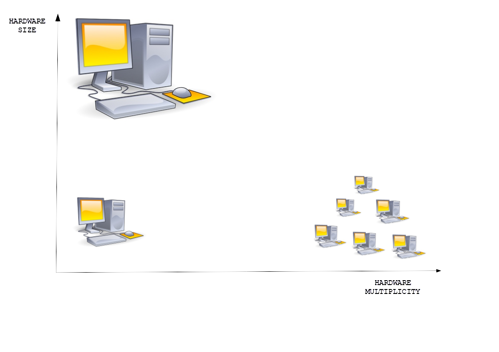

NoSQL Database Systems
NoSQL Database Systems
Outline
NoSQL database system ? What is it ?
- NoSQL database systems were developed in early 2000s in a response to the demands for processing of vast amounts of data produced by increasing Internet usage and mobile geo-location technologies
- Traditional solutions were either too expensive, not scalable, or required too much time to process data
- Modern NoSQL database systems "borrowed" some of the solutions from the earlier systems and made significant advances in scalability and efficient processing of diverse types of data such as text audio, video, image, and geo-location
- NoSQL database systems include the following types of database systems categorized by a logical view of data provided: key-value stores, document stores, graph stores, column stores, etc
NoSQL Database Systems
Outline
What is in the name "NoSQL"?
- A term "NoSQL" has been used for the first time in late 1990 by C. Strozzi as a name of open-source relational database system that did not use SQL as a query language
- The usage of "NoSQL" as it is recognized today has been used by J. Oskarsson in 2009 for the projects experimenting with alternate data storage, like BigTable (Google) and Dynamo (Amazon)
- "NoSQL" database systems do not use SQL, run on the clusters of computers and provide different options for consistency and distribution
- Despite its confrontational nature some people say that "NoSQL" means "Not Only SQL", but ... then it should be written as "NOSQL" and it is not
NoSQL Database Systems
Outline
Why NoSQL database systems ?
- Data model: A tabular view of data is not convenient for hierarchical and network database domains
- Impedance mismatch problem: A tabular view of persistent data is not consistent with a transient view of data in object-oriented programming languages
- Application and integration of database systems: A structure that integrates many applications is more complex than single application requires, for example an index required by one application may cause performance problems for another application
- Clusters of small computers: Relational databases that operate on the shared persistent storage subsystems are not designed to work well on the clusters of small computers
- Distribution and consistency: ACID based transaction protocols are too strict for distributed transaction (see previous presentation)
Why NoSQL database systems ?
- Data model: A tabular view of data is not convenient for hierarchical and network database domains
- Logical design provides the following relational schemas:
CUSTOMER(cnumber, first-name, last-name) PRIMARY KEY = (cnumber) ORDERS(onumber, odate, cnumber) PRIMARY KEY = (onumber) FOREIGN KEY = (cnumber) REFERENCES CUSTOMER(cnumber) LINE(onumber, lnumber, item, price, total) PRIMARY KEY = (onumber, lnumber) FOREIGN KEY = (onumber) REFERENCES ORDERS(onumber)

Why NoSQL database systems ?
- Impedance mismatch problem: A tabular view of persistent data is not consistent with a transient view of data in object-oriented programming languages
- Consider the relational tables
DOCUMENT(title, class, edate)
ACCESS(user,class)
SELECT title
FROM DOCUMENT JOIN ACCESS
ON DOCUMENT.class = ACCESS.class
WHERE user = ...;
Why NoSQL database systems ?
- Object-oriented programming forces encapsulation of object classes
- Encapsulation of objects classes forces one object at a time technique of object processing
class Document{ String title; String className; Date edate )class Access( String user, String className)
for(a in Access)
for( d in Document)
if a.user = ... and d.className = a.className then
out(d.title);
Why NoSQL database systems ?
- In object-oriented view, join is performed by an application and not by a database server
- One object at a time technique of object processing forces nested loop implementation of join operation
- When object-oriented application is processed remotely from a database systems the relational tables must be transmitted to a remote site
- Database application programmers should directly access a bulk object (e.g. a collection of the documents) instead of forming the member objects individually and grouping them into a bulk object inside an application code
- A query must be stored at and it must be processed by a database server
Why NoSQL database systems ?
- Clusters of small computers: Relational databases that operate on the shared persistent storage subsystems are not designed to work well on the clusters of small computers

NoSQL Database Systems
Outline
- NoSQL database system ? What is it ?
- What is in the name "NoSQL" ?
- Why NoSQL database systems ?
- Properties of NoSQL database systems
- Semistructured, unstructured data, and schemaless data model
- Specialized distribution models
- Weak consistency
- Relaxing durability
- Versioning
Semistructured, schemaless data model
- Semistructured data is a form of structured data that does not conform to the formal structure of data models associated with relational databases or other forms of data tables
- Semistructured data contains tags or other markers to separate semantic elements and enforce hierarchies of records and fields within the data
- Schemaless data model means that no particular data structure is used to store data in a database
- Schemaless database does not require consistency with a rigid schema, e.g. database schema, relational schema, data type, table, etc.
- Schemaless database does not enforce data type limitations on individual values
- Schemaless database can store structured and semistructured data
NoSQL Database Systems
Outline
- NoSQL database system ? What is it ?
- What is in the name ?
- Why No SQL database systems ?
- Properties of NoSQL database systems
- Semistructured, unstructured data, and schemaless data model
- Specialized distribution models
- Weak consistency
- Relaxing durability
- Versioning
Specialized distribution models
- Single server: means no distribution at all
- Sharding: to support horizontal scalability we put different parts of data onto different servers (shards)
- Data distribution leads to two data replication modes:
- Master-slave replication: data is replicated across multiple nodes and one node is designated as master node, the others are slaves; all updates are made to the master and later on propagated to slaves
- Peer-to-peer replication: data is replicated across multiple nodes; all replicas have the same weight, no master mode; nodes communicate their writes; all nodes read and write all data
- Combining sharding and replication: use both master-slave replication and sharding
NoSQL Database Systems
Outline
- NoSQL database system ? What is it ?
- What is in the name ?
- Why No SQL database systems ?
- Properties of NoSQL database systems
- Semistructured, unstructured data, and schemaless data model
- Specialized distribution models
- Weak consistency
- Relaxing durability
- Versioning
Weak consistency
- A typical read consistency principle where update is performed over two or more data items blocks access to all data items affected by the update, for example in 2PL protocol
- NoSQL database systems relax the strict transactional consistency to some extent
- In a new model of consistency, data items can be left inconsistent over certain period of time called as inconsistency window
- A concept of eventual consistency is used to enforce replication consistency over distributed and replicated data items
- Eventual consistency means that the copies of data items can be inconsistent in inconsistency window and all copies will have the same value later on
Weak consistency
- Different domains have different tolerances for inconsistencies and we have to take this tolerance into account as make our decisions
- Even in traditional relational database systems it is possible to relax consistency from the highest isolation level (serializable) to the lowest levels (read-committed) to get better performance
- CAP theorem: Out of three properties of Consistency, Availability, and Partition tolerance you can get only two
- Consistency: A state of a database satisfies the given consistency constraints at any moment in time
- Availability: If you can talk to a node in a cluster then it can read and write data
- Partition: Cluster can survive communication breakages that separate the cluster into multiple partitions unable to communicate with each other (split brain)
Weak consistency
- A single server system is CA because it has Consistency and Availability and not Partition tolerance
- If a cluster must be tolerant of network partitions, then we have to trade consistency for availability
NoSQL Database Systems
Outline
- NoSQL database system ? What is it ?
- What is in the name ?
- Why No SQL database systems ?
- Properties of NoSQL database systems
- Semistructured, unstructured data, and schemaless data model
- Specialized distribution models
- Weak consistency
- Relaxing durability
- Versioning
Relaxing durability
- If SQL systems follow ACID properties then NoSQL systems follow BASE properties: Basically Available, Soft state, Eventually consistent
- Relaxing durability means that we trade of durability for higher performance, for example, apply updates to in-memory representation of a database and periodically flush changes to disk
- Another class of durability tradeoffs comes with replicated data, for example, when a node processes and update but fails before that updates is replicated to other nodes
NoSQL Database Systems
Outline
- NoSQL database system ? What is it ?
- What is in the name ?
- Why No SQL database systems ?
- Properties of NoSQL database systems
- Semistructured, unstructured data, and schemaless data model
- Specialized distribution models
- Weak consistency
- Relaxing durability
- Versioning
Versioning
- A version is a particular form of something differing in certain respects from an earlier form or other forms of the same type of thing
- Versioning in a database systems means that all modifications of data items are stored in a database together with timestamps when such modifications occurred
- In practice versioning is performed to a predefined depth, i.e. a total number of versions of data item is determined when a data item is created
- Versioning allows for representation of historical information
- Numbering of data versions through timestamps allows to track when a data item has changed and if a new version is available allows to determine specifically which version is the most current one
References
- Harrison G., Next Generation Databases, NoSQL, NewSQL, Big Data, Apress, 2015